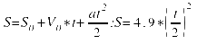
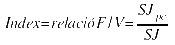
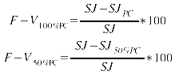
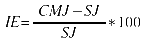
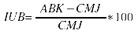
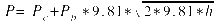
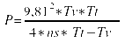
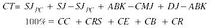
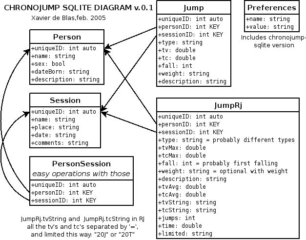

Traducción automatizada al español (texto no revisado).
Article:
"Primeres aproximacions a la creació d'un mètode de mesura, gestió i estadística de la capacitat de salt a partir de l'avaluació de temps de vol i temps de contacte a una plataforma de contactes amb programari i maquinari lliure. Projecte ChronoJump."
AUTOR: Xavier de Blas Foix (http://www.xdeblas.com)
RESUM
L'avaluació de la capacitat de salt és un problema que tradicionalment ha preocupat a professionals de la motricitat arreu. Al segle passat s'han descrit nombrosos tests que comprenen una determinada manera execució i un mètodes d'avaluació en ocasions basats en complexes instrumentacions de les que no es pot comprobar el seu funcionament intern.
L'article que es presenta exposa un mètode per a la medició dels distints salts trobats a la bibliografia usant un conjunt de tecnologies en que sí es pot comprobar la seva validesa, fiabilitat i objetivitat, doncs tant el codi del programari com del maquinari és lliure. L'instrumentació va un pas més enllà facilitant a més de la mesura, la gestió i estudi dels events d'aquests salts.
El projecte que es descriu, ChronoJump1, es preocupa també de la distribució del programari, de facilitar eines de construcció de tot el maquinari i de la validació d'aquest, de que funcioni correctament a gairebé qualsevol ordinador, de que es disposi de versions en el major nombre de llengües possible, i de la realimentació de l'usuari.
Finalment s'apunten algunes línies de futur entre les que destaca la creació d'una estructura client-servidor que permetria tenir una base de dades mundial en l'estudi del salt.
INTRODUCCIÓ
Molts dels events esportius es caracteritzen per ser molt breus i difícils per tant d'apreciar per l'ull humà. En un fora de joc, per exemple, el línier ha de percebre en el "moment just" de la passada, si alguna part del cos del davanter que rebrà la pilota està més avançada que qualsevol part del cos del defenses contraris. La diferència entre aquestes distàncies pot ésser d'uns 10 centímetres, mesura difícil d'establir a ull nu, i més si tenim en compte que l'amplada del camp pot ser de 45-90 metres, que el passador conforma un triangle d'una alçada probablement superior a 40 metres, i que el "moment just" és un interval de temps que ha de tendir a zero. Al línier i l'àrbitre se'ls presenta l'oportunitat de decidir davant d'un esdeveniment pel que no poden estar mai prou preparats.
La solució al problema proposat passaria per incorporar un microchip emissor a les botes de cada jugador i un a la pilota, aquests serien detectats per un aparell que captaria les coordenades cartesianes bidimensionals de les 45 entitats. D'aquesta manera tindríem l'ubicació de tots els agents que ens interessen, tot i que caldria modificar el reglament per tal que sigui el peu més avançat el que decideixi si s'està o no en fora de joc, o fins-i-tot el punt mig entre els dos peus.
De la mateixa manera, a una cursa de 100 metres, la pistola de sortida i la cèl·lula fotoelèctrica d'arribada estan connectades a un dispositiu cronometrador, que afegit al conegut "foto-finish", permeten no només determinar qui és el guanyador, sinó a més tenir un cronometratge prou precís de la cursa. Ningú ha d'activar el cronòmetre quan es senti la senyal, sinó que aquest s'activa automàticament.
Si les dues metodologies exposades destaquen per l'increment de precisió respecte als nostres sentits en la qualitat de mesurar l'event esportiu, la solució que es presenta en aquest article, destaca a més a més per les capacitats de gestió, anàlisi i presentació de resultats que ofereix, dirigits a partir d'ara a l'avaluació de la capacitat de salt.
MARC TEÒRIC
El salt és una habilitat motriu bàsica que es troba present en gran nombre de gestos esportius així com a especialitats concretes de l'atletisme. La mesura del salt és també un indicador de la força i la potència del tren inferior. S'ha descrit a més un mètode per a estimar indirectament (amb els salts CMJ i RJ15 que es veuran a continuació), el percentatge de fibres lentes i ràpides sense recórrer a la biòpsia muscular (Bosco C., 1987).
Els tipus de salts usats per a mesurar la capacitat de salt són molt diversos, per al seu anàlisi caldria anomenar las variables que hi intervenen, que són: amb cursa o desde parats; amb una o dues cames; verticals o horitzontals; amb impuls d'altres elements corporals com braços, cap i tronc o sense ells; amb impuls previ o sense; amb caiguda desde una alçada determinada o sense ella; amb elements impulsors externs com el trampolí o sense ells; salts repetitius o salt simple. Cada especialitat esportiva té unes característiques pròpies, per aquest motiu quan es requereix realitzar una valoració del salt dels qui hi participen, cal escollir la modalitat de salt que més s'ajusti. (De Blas, X., García-Fojeda, A., Lapuente, M., Áquila, F. i Cebolla, J., 1999).
Un cop anomenades les diferents variables, es mostra a continuació un recull dels salts que s'han tipificat a la bibliografia:
Test de Seargent, salt vertical desde parat, realitzant una flexió de cames de 90 graus, per a, impulsant-se amb cames, tronc i braços, arribar a una alçada màxima amb un dels dos braços.
Test d'Abalakov, semblant al de Seargent però mesurant amb una cinta mètrica de no-retorn, que uneix la cintura amb el terra.
Test de Bosco (Bosco, C., 1994), que comprèn diversos salts:
Squat Jump (SJ), es parteix de parat, amb flexió de genolls de 90 graus, tronc recte i mans a les cintures, i s'executa un salt vertical sense ajudar-se ni amb els braços, ni amb el tronc. Entre d'altres qualitats/capacitats que mesura, el SJ és un indicador de la força explosiva.
Squat Jump amb càrregues variables (l'anomenarem SJ+), com l'anterior però col·locant càrregues en el cos. Aquestes es diferenciaran per la seva massa (Kg) o com a percentatge respecte al pes del subjecte. L'estudi dels resultats amb l'aplicació de diferents càrregues permet construir gràfiques força-velocitat.
Counter Movement Jump (CMJ), similar al SJ però dempeus i realitzant un contramoviment fins arribar als 90 graus de flexió de genolls. Aquest salt permet obtenir la força elàstica.
Drop Jump (DJ), similar al CMJ però deixant-se caure des d'una alçada determinada. És Indicador de força explosiva-balístico-reactiva.
Reactive Jump (RJ), salts DJ repetits un nombre determinat de vegades o durant un temps determinat. La successió de salts permetrà conèixer la potència anaeròbica alàctica o la resistència anaeròbica làctica, segons la durada de l'exercici.
Salts específics: qualsevol salt particular d'una tècnica esportiva.
Cal recordar que aquests tests s'han d'entrenar prèviament, per tal de "minimitzar els factors lligats a la tècnica d'execució, i deixar les variacions en els resultats a modificacions en la força" (Aguado, X., Grande, R., López i J.L., 1999, p. 22). En el cas del SJ, i donat la dificultat que suposa la seva correcta execució, alguns autors proposen canviar-lo per el CMJ argumentant que no és desitjable arribar a conclusions errònies amb el SJ, i que hi ha correlació entre ambdós (González, J.J. i Gorostiaga, E., 1995). En darrer lloc cal considerar que les condicions prèvies d'escalfament han de ser sempre les mateixes doncs aquest influeix notablement en el resultat. (Esper, A., 2000)
Un cop s'han mostrat els diferents salts, es citen les fórmules que ens permeten obtenir índexs que puguin ésser d'utilitat per a l'estudi de la capacitat de salt i d'altres conceptes associats:
Alçada del CdG en el salt. Tot i que cal advertir que aquest càlcul té un 3.55% d'error en el salt CMJ i un 7.40% en el RJ (Hatze, H., 1998), degut a les errades de mesura que es produeixen ja que els genolls es troben més flexionats en la recepció que en l'impuls. (Frick, U., Schmidtbleicher, D. i Wörn, C., 1991)

Index de Bosco (a González, J.J. et al., 1995)

SJpc: salt amb càrrega equivalent al pes corporal.
Indexs força-velocitat de Vélez (Vélez, U., 1992)

Index d'elasticitat IE (Bosco, C., 1984)

Index d'utilització de braços IUB

Corva Força/Velocitat, usant com a força el pes si no es coneix aquesta en Newtons (González, J.J. et al., 1995), i la velocitat és la angular dels genolls, que caldrà determinar-la amb algun altre instrument.
Corva de potència (González, J.J. et al., 1995)

Pc: pes corporal; Pb: pes adicional (una barra d'halterofilia en aquest cas); h: alçada del salt en metres.
Potència en RJ (Aguado, X., 1997)

Tv: temps de vol total; Tt: temps total; ns: nombre de salts.
Capacitat total (Aguado, X., 1997)

CC: capacitat contràctil; CRS: component de reclutament instantani i sincronització de fibres musculars; CE: capacitat elàstica; CB: capacitat d'utilització de braços; CR: component reflex.
Per a més informació d'aplicacions, correlacions, valors de referència i qualitats/capacitats que mesuren els diferents salts es recomana la lectura de "Fundamentos del entrenamiento de la fuerza. Aplicación al rendimiento deportivo" de González, J.J i Goriostiaga, E. (1995) pàgines 267 a 300, així com la recomanació bibliogràfica que acompanya al producte Axon Jump2.
A continuació es descriuen els antecedents que s'han trobat en la mesura del salt amb plataforma de contactes.
El paquet integrat més difós és el Ergo Jump Boscosystem® (Bosco, C., Luhtanen, P., Komi, V., 1983). Consistent en una plataforma conductiva connectada a un sistema de cronometratge electrònic que és accionat pel subjecte en el moment de l'abandonament de la plataforma així com en la recepció, de manera que s'obté el temps de vol i el temps de contacte. Aquest sistema està connectat a un ordinador de butxaca PSION-CM®.
Tot i que el sistema Ergojump es considera un gran avançament en els estudis de camp en matèria esportiva, (De Blas, X. et al., 1999) observen algunes deficiències en el mateix: l'elevat preu de l'equip, la incapacitat d'anotació de les dades automàticament, la impossibilitat de connexió a un PC, l'observació de problemes de fiabilitat en funció de les diferents versions de l'ordinador PSION en que es muntava el programa, i la impossibilitat de revisió-actualització del programa per part dels usuaris degut a la seva llicència "tancada".
El programa Salta apareix com a resposta a les problemàtiques que els seus autors havien detectat en el sistema Ergo Jump. Aquest funcionava en qualsevol PC que pogués tenir el sistema operatiu MS-DOS i captava les dades enviades per una plataforma de contactes similar a la que s'oferia en el producte de Boscosystem, i es connectava al PC pel port paral·lel. L'aparició dels sistemes operatius Windows XP, i la decisió de la companyia Microsoft® de no permetre que els programes MS-DOS siguin executats3, va propiciar la creació del programa Gsalta4, que es va escriure per a sistemes GNU/Linux5 (tot i que podria funcionar en d'altres), i que es protegia sota la llicència de software lliure GPL6.
La innovació principal de Gsalta era que el seu codi font es trobava disponible a la xarxa i que aquest es protegia sota una llicència de programari lliure7, un programari que aposta per la llibertat de informació i la cooperació en el desenvolupament (Raymond, E. 1999), característiques que es corresponen amb el model obert de la ciència, (model que ha demostrat ser la millor manera de creació de informació), i les obligacions de la seva Ètica, com són: 1. les fonts han de ser citades 2. la solució no es pot mantenir en secret (Pekka, H., 2002). A més aquesta era de tipus Copyleft8, que implica que a més de que es facilita el codi font i es permeten tot tipus d'adaptacions, qualsevol treball derivat haurà de tenir la mateixa llicència. D'aquesta manera no es permet una apropiació de l'eina ni de les seves re-implementacions.
Si es té en compte que la revisió de parells és un dels pilars sobre el que s'assenta el model modern de la ciència, es considera inacceptable realitzar recerca científica usant els resultats de metodologies "tancades" tant a nivell de programari com de maquinari. Cal dir que la enginyeria del software té menys de 25 anys, i el seu estat actual de desenvolupament no permet dictaminar quins mètodes de programació condueixen a menys errades, ni tampoc establir si un algoritme -o consecució ordenada i finita de passes que permeten arribar a una fi- solventa o no el que hauria de resoldre. Si l'algoritme és públic, qualsevol auditoria externa podrà concloure la validesa del mètode i les dades obtingudes, i ho podrà fer abans, durant o després de la recerca; per altra banda, extreure conclusions basades en mesures de dubtosa procedència vulnera el ja comentat principi de revisió de parells. Com a exemple, el Grup Sobreentrenamiento9 està comercialitzant una metodologia similar a la que es presenta en aquest projecte en quant a les característiques tècniques citades, anomenat Axon Jump, però que adverteix que es perd la garantia si "s'obre la plataforma intencionalment"10.
El programa Gsalta malauradament no ha gaudit mai d'una maduresa suficient com per a ser publicat, i alguns dels seus autors han abandonat el desenvolupament per a dedicar-se al projecte ChronoJump.
S'ha trobat també el programa WinLaborat11, del que no s'ha pogut fer una avaluació fins a la data.
OBJECTIUS
Els objectius d'aquest projecte són els següents:
Crear una eina informàtica lliure multiplataforma que permeti:
Mesurar les distintes fases temporals del salts del protocol de Bosco de forma vàlida, fiable i objectiva.
Vincular els salts a persones i sessions i facilitar la gestió entre aquestes tres entitats de relació.
Obtenir taules estadístiques amb els tests e índexs associats als salts de forma automatitzada
Representar gràficament totes les taules estadístiques obtingudes.
Exportar els salts a XML i HTML.
Crear informes en format XML, PDF i HTML a partir de plantilles.
Proporcionar formes de construcció i validació de l'eina.
Compilar l'eina per al major nombre de sistemes operatius possible.
Traduir l'eina en el major nombre de llengües possible, i d'altres localitzacions com el format de representació de dades numèriques.
Distribuir l'eina i actualitzacions de la mateixa periòdicament per tot el món.
Mantenir un entorn de preguntes i respostes, feedback de peticions i contribucions.
MATERIAL I MÈTODE
En aquest apartat es procedirà a especificar de quina manera es proposa aconseguir cadascun dels objectius enunciats anteriorment. Degut a l'elevat nombre d'objectius presentats, aquests s'aniran citant altre cop per a facilitar la lectura de l'article.
OBJ 1: "Crear una eina informàtica lliure multiplataforma que permeti:"
Aquesta "eina" estarà composada per:
Una plataforma de contactes que envii una senyal elèctrica diferent en funció de si el subjecte està al damunt de la mateixa o si està a l'aire seguint les indicacions de De Blas, X. Buscà, B. i Daza, G., (2004). També s'apunta la possibilitat d'usar una plataforma de contactes a partir d'un "tapet" de videojoc adaptat (Cárdenas, E., 2004).
Un circuit integrat o PIC (maquinari) per al mesurament precís i fiable del temps transcorregut entre els canvis d'event que envia la plataforma. S'usarà una derivació del microcontrolador Skypic12. Aquest microprocessador enviarà els regitres "crus" a l'ordinador usant el port sèrie o el USB.
Un programari que gestioni les dades enviades pel circuit integrat conjuntament amb la lògica de subjectes i sessions, i amb la resta de característiques que es presenten: càlcul d'índexs, presentació de taules comparatives de dades, representació gràfica, creació d'informes i estadística.
El programari serà lliure en quant respecti les directrius de programari lliure dictades per la fundació GNU13, tot i que es recomana que compleixi també les DFSG14 (Debian Free Software Guidelines) i les normes dictades per la OSI15 (Open Standard Institute). Com la llicència que s'atorgarà tant al programari com al maquinari serà la GPL (GNU Public License), es garanteix que tots els estaments la consideraran lliure.
Una de les avantatges que ofereix un producte lliure radica en el cercle de vida del mateix, així com en el programari propietari es comercialitza un producte i serveis associats a ell durant 3-5 anys, i després cal crear un substitut, en el programari lliure, la disponibilitat del codi font amplia aquest cercle de vida fins a l'infinit. (Romeo, A. i García, J., 2003)
El microcontrolador es programarà usant també programari lliure per tal de no haver de dependre de cap fabricant en la seva elaboració (González, J. i Prieto-Moreno, A., 2004). Malauradament no hi ha una definició unificada que pugui servir per a catalogar un maquinari com a lliure o no, tot i que el creador del projecte GNU, Richard Stallman, ha postulat que les idees del programari lliure es poden aplicar als fitxers necessaris per al seu disseny i especificació, però no al circuit físic en sí. (Stallman, R., 1999).
El concepte multiplataforma no es refereix en aquest cas a la plataforma de contactes, sinó que ha de ser capaç de funcionar correctament en el major nombre de sistemes operatius possible. Per a aquest objectiu s'usarà la Infraestructura de Llenguatge Comú CLI16, que permet que programes escrits en diferents llenguatges puguin operar de forma conjunta, donant als programes la possibilitat de descriure's a sí mateixos i proporcionant un entorn d'execució vàlid per a diferents plataformes (Mayo, J. 2002, p. 4) La implementació usada serà Mono17, una distribució lliure de CLI que funciona correctament a Windows, Linux, MAC OS X, i als hardwares x86, PowerPC, i SPARC (Dumbill, E. i Bornstein, N.M., 2004) els mateixos autors adverteixen: "si no hi ha cap raó per a restringir la portabilitat d'una aplicació, per què fer-ho?" p.241. S'adjunta a continuació un pàrraf de Jordi Mas explicant el funcionament de Mono com a màquina virtual:
A diferència dels programes tradicionals que s'executen sobre el sistema directament, els programes a la plataforma Mono s'executen en un entorn controlat d'execució conegut com la màquina virtual. Aquest entorn proporciona numbroses avantatges sobre l'execució tradicional directa: gestió de memòria automàtica (el sistema s'encarrega de recuperar automàticament la memòria no usada per les aplicacions simplificant la gestió a les aplicacions), un entorn segur d'execució (on podem definir els recursos físics i lògics als que l'aplicació té accés), i un sistema de control d'errades i execució que permet una gestió d'errades avançada. (Mas, J., 2004).
Aprofitant que Mono permet l'ús de diversos llenguatges de programació, per al programari s'usarà C# , i per al maquinari C, com a llenguatge de "baix nivell", el que implica que treballa amb el mateix tipus d'objectes que les computadores: caràcters, nombres i adreces que poden ser combinats i canviats de lloc pels operadors aritmètics i lògics de les màquines reals. (Kernighan, B., Ritchie, D., 1991)
OBJ 1.1: "Mesurar les distintes fases temporals del salts del protocol de Bosco de forma vàlida, fiable i objectiva."
Les característiques que cal exigir-li a qualsevol instrument de mesura són: validesa, fiabilitat i objectivitat. (Blázquez, D., 1990)
Sabent que un test és vàlid quan mesura allò que es suposa que hauria de mesurar, en el cas que ens ocupa: obtenir l'alçada d'elevació del CdG d'un subjecte a partir del temps de vol del mateix, és del tot vàlid perquè així ho demostra les lleis de la física mecànica sempre i quan la posició de sortida del cos sigui igual a la d'arribada, cosa que ha de succeir si el salt s'ha realitzat correctament. Es recorda que l'aprenentatge previ del salt és una premisa per a la seva realització.
Quant a la fiabilitat o estabilitat dels resultats, es comenta que els nous sistemes operatius multitasca no són adequats per a mesurar events doncs ja de forma teòrica s'estima que és més que probable que el sistema estigui "entretingut" en qualsevol altra cosa en el moment de mesurar el que se li demana, cosa que provoca que aparegui un retard aleatori que no és més que una mesura de baixa fiabilitat. Per aquest motiu s'inclou en el mètode un microprocessador extern especialitzat que ha de garantir la no-aparició d'errada aleatòria. Caldrà realitzar, però, tests amb senyals convenientment modulades per a estudiar el comportament d'aquest PIC amb els "rebots" de l'electrònica.
L'objectivitat serà màxima tenint en compte que l'observador és una màquina. Tot i que la figura de "l'examinador" continúa present, només se li demana que estigui format en la diagnosi de salts correctes o incorrectes, tasca que no ha de suposar cap problema doncs es torna a incidir en que els esportistes han de saber realitzar els salts amb correcció, i els patrons d'execució es troben clarament exposats a la bibliografia.
OBJ 1.2: "Vincular els salts a persones i sessions i facilitar la gestió entre aquestes tres entitats de relació."
La vinculació de les entitats: subjecte, salt, i sessió permet associar automàticament cada salt al seu "Autor" i en el seu "moment", de manera que no sigui necessari anar anotant en un paper i després introduint a un ordinador els resultats per tal de realitzar els càlculs. Aquesta gestió es considera capital per a la disminució de l'errada accidental, errada que a diferència de la sistemàtica, és variable i depèn de la persona (Aguado, X., 1993). A més, cal advertir que una incorrecta gestió de la informació provoca retards excessius en la seva interpretació, pèrdua de dades i fins-i-tot la impossibilitat de recuperar-les. (Storey, D., 2000)
La correspondència de les dades es concreta en una base de dades relacionals SQLITE18, que és una petita llibreria de C que implementa un motor de base de dades SQL ja preconfigurat, autocontingut de versió reduïda i empotrable que emmagatzema les dades en un únic fitxer de text pla, i que afortunadament es troba integrada a Mono19. La referència per a l'estudi de SQL usada és "Edición Especial MySQL" de Paul Dubois (2001).
A continuació s'inclou un disseny de la base de dades relacional:

D'aquesta manera, consultar temps de vol dels salts de tipus CMJ que hi ha hagut a la sessió 3 fets per un home seria:
SELECT tv FROM jump, person WHERE type=="CMJ" AND sessionID==3 AND sex=="true" AND jump.personID == person.uniqueID;
Es demana disculpes per la concepció de sex=="true" per l'home i sex=="false" per la dona, però és la forma d'expressar el que a l'algebra de Boole s'entèn com '1' i '0', i que tradicionalment s'usa en fulls de càlcul i bases de dades com a distinció entre sexes.
Per a comparar els valors màxims de cada salt simple excepte el "DJ" en tots els subjectes i entre les sessions 1, 25 i 26, retornant el nom del saltador, el tipus de salt, el temps de vol i la sessió agrupats per tipus de salt i sessió i ordenats per nom, tipus de salt i sessió, es faria:
SELECT name, type, MAX(tv), sessionID FROM jump, person WHERE jump.personID == person.uniqueID AND type != "DJ" AND ( sessionID == 1 OR sessionID == 25 OR sessionID == 26 ) GROUP BY type, sessionID, ORDER BY name, type, sessionID;
Les consultes descrites serien preparades pel propi programa basant-se en les seleccions de l'usuari a partir de simples widgets o botons d'interacció.
OBJ 1.3: "Obtenir taules estadístiques amb els tests e índexs associats als salts de forma automatitzada."
La potència del llenguatge estàndar de consulta a base de dades (SQL) ens ha de permetre realitzar qualsevol càlcul de forma senzilla i elegant. Com a exemple, per a trobar els 3 millors valors del índex de potència d'Aguado en RJ a la sessió 7 es faria:
SELECT person.name, person.sex, jumpRj.jumps, jumpRj.time, jumpRj.tvAvg, (9.81*9.81 * tvavg*jumps * time / ( 4 * jumps * (time - tvavg*jumps) ) ) AS potency FROM jumpRj, person WHERE type == 'RJ' AND jumpRj.sessionID == 7 AND jumpRj.personID == person.uniqueID ORDER BY potency DESC LIMIT 3;
Acompanyant als resultats, s'oferiran mitjans estadístics per a la presentació de dades, com distribucions de freqüències i histogrames, a més de índexs univariants de mesura de tendència central, de dispersió i de posició. S'han publicat obres específiques d'estadística aplicada a l'esport que poden ser de gran ajuda, com la de Toni Planas (1999).
OBJ 1.4: "Representar gràficament totes les taules estadístiques obtingudes."
Per a les gràfiques s'usarà la llibreria de tercers: NPLOT20, que té una llicència BSD21, així es podrà servir gràfiques en el programa sense cap mena de restricció legal. A data d'enviament d'aquest article, encara no es pot usar NPLOT sobre la versió de MONO que es distribueix a la branca Sid de Debian22 (la 1.0.4) , però sí en la versió 1.0.5 i en la de desenvolupament.
OBJ 1.5: "Exportar els salts a XML i HTML.", i OBJ 1.7: "Crear informes en format XML, PDF i HTML a partir de plantilles."
El format autodescriptiu XML23 es tria com a medi de transformació de les dades cap a qualsevol altre format. Aquestes operacions es realitzen a partir de plantilles de transformació XSLT24 que es poden crear fàcilment, així totes les dades del programa sempre podran ser exportades sense que es produeixi "apropiació" d'un conjunt de dades per part d'un programari concret. Amb aquesta estructura resultarà trivial ofertar a l'usuari la creació d'informes de les dades obtingudes i els càlculs estadístics desitjats intra o intersessió.
OBJ 2: "Proporcionar formes de construcció i validació de l'eina."
A nivell del programari cal mostrar al futur usuari la manera d'obtenir-lo compilat -és a dir preparat ja per a que funcioni a qualsevol sistema-, com compil·lar-lo -és a dir, convertir el text escrit pel programador en codi executable per la màquina-, i com obtenir les llibreries necessàries per a executar-lo o compilar-lo depenent de l'arquitectura de l'usuari. Serà necessari també, presentar les diferents formes de construcció de la plataforma de contactes especificant el material requerit. En darrer lloc, per al microcontrolador cal facilitar esquemes de construcció del mateix, així com contactar amb alguna empresa per a que el comercialitzi a baix cost per a qui estigui interessat.
OBJ 3: "Compilar l'eina per al major nombre de sistemes operatius possible."
Tot i que en el punt anterior s'indica com es pot realitzar la compilació, a molts usuaris els espanta haver de fer aquest procés. Així es recomana mantenir versions actualitzades ja preparades per a qualsevol arquitectura de les que suporta Mono, de manera que l'usuari simplement s'hagi de baixar el programa de la xarxa i executar-lo sota la màquina virtual.
OBJ 4: "Traduir l'eina en el major nombre de llengües possible, i d'altres localitzacions com el format de representació de dades numèriques."
Gràcies a l'eina Gettext25 Es generaran fitxers POT que contenen totes les cadenes de text a traduir, i que seran convertides a diferents fitxers per a cadascuna de les llengües que convingui. Es demanarà els serveis del Gnome Translation Project26 que disposa d'equips de traducció per tot el món27, i que està disposat a traduir permanentment el programari lliure i la documentació del mateix de forma gratuita sempre i quan s'usi el CVS de GNOME28.
La tecnologia locale29, permet que qualsevol usuari entengui, entre altres coses, la presentació numèrica de les dades, doncs aquestes s'adapten automàticament als seus "trets culturals".
OBJ 5: "Distribuir l'eina i actualitzacions de la mateixa periòdicament per tot el món."
Es contacta amb diferents desenvolupadors de distribucions de programari lliure com Debian, RedHat30, Mandrake31 i Gentoo32, per a que disposin el programa compilat a l'abast de tothom. Per a distribucions com Ubuntu33 no caldrà contactar, doncs aquesta ja compila tots els paquets disponibles per a Debian.
Degut a que el maquinari lliure té naturalesa física, s'experimenten problemes de distribució que no apareixen en el programari, tal i com descriuen González, I., González, J. i Gómez-Arribas F. (2003):
Un disseny físic és únic, no és possible la compartició tal i com es coneix amb el programari.
La compartició té associat un cost
Pot haver problemes de disponibilitat dels components.
Tal i com s'ha apuntat anteriorment, caldrà facilitar tota la informació de construcció del mateix i contactar amb alguna empresa distribuidora.
OBJ 6: "Mantenir un entorn de preguntes i respostes, feedback de peticions i contribucions."
Es crea la pàgina web http://chronojump.software-libre.org com a pàgina pública del projecte, i
https://software-libre.org/projects/chronojump/ com a pàgina de desenvolupament. A aquesta última s'activen 4 llistes de correu per a mantenir el feedback amb els usuaris. Les llistes creades són:
chronojump-developers: per a discussió sobre el desenvolupament.
chronojump-general-en: per a discussió entre usuaris, peticions, i detecció d'errades... en anglés.
chronojump-general-es: com l'anterior però en castellà.
chronojump-releases: per a publicar informació de noves versions (de baix tràfic).
PERSPECTIVES DE FUTUR
Es descriuen a continuació línies de treball que es poden seguir un cop s'hagin assolit els objectius proposats fins ara.
Salts específics: Incloure i actualitzar periòdicament un extens llistat de salts específics, facilitant a més la creació dels mateixos per part dels usuaris. Caldrà modificar la base de dades i preveure inconsistències entre versions de la mateixa.
Temps de reacció: Reproduir una senyal acústica o visual a l'esportista que haurà de tocar o sortir de la plataforma al percebre l'event. Cronometrar l'event des de l'exposició de la senyal.
Augmentar les exportacions: Ofertar més possibilitats d'exportació de dades sempre basant-se en un document XML generat "al vol".
Mesclat de bases de dades: S'ha de preveure mecanismes per a juntar diferents fitxers de bases de dades en un sol arxiu per a que els entrenadors que hagin treballat en diferents entorns puguin interpretar les seves dades de forma conjunta.
Cronometratge entre plataformes: No serà complex gestionar més d'una plataforma per a cronometrar circuits o curses.
Validació de salt per vídeo: Es podria mostrar una reproducció digital de la seqüència del salt per tal de decidir si aquest és correcte o no. Es durà a terme gestionant la filmació digital d'un objecte control i de l'execució, i presentant a l'usuari la possibilitat de calcular angles corregits respecte al citat objecte. Aquesta aplicació serviria també per a estudiar criteris de qualitat dels salts, com la òptima flexió prèvia de genolls en una determinada tècnica esportiva o velocitats angulars en l'execució.
Servidor ChronoJump: Un servidor associat a aquesta tecnologia, permetria que els entrenadors poguessin compartir els registres dels esportistes -ocultant els noms d'aquestos, si es desitja-, creant una base de dades a nivell mundial que serà molt profitosa per a tot tipus de comparacions, tot i que s'haurà d'estudiar mecanismes per a garantir que les dades s'han obtingut correctament i que pertanyen al grup que s'especifica.
CONCLUSIONS
Al tractar-se aquest article de només unes primeres pistes per a la concreció d'aquest projecte i essent un treball que no ha formulat hipòtesis, no es creu oportú apuntar conclusions en aquest moment a excepció de la simple repetició del títol:
És possible crear un mètode de mesura, gestió i estadística de la capacitat de salt a partir de l'avaluació de temps de vol i temps de contacte a una plataforma de contactes amb programari i maquinari lliure
Com a apunt final, es demana a tothom que hi estigui interessat que es dirigeixi a la llista de correu chronojump-general-es per a fer comentaris al voltant de la metodologia o per a proposar característiques que desitjaria veure incorporades, i es recorda que a la pàgina pública del projecte: http://chronojump.software-libre.org s'hi troben captures de pantalla actualitzades.
BIBLIOGRAFIA
Aguado, X., Izquierdo, M., González, J.L. (1997). Biomecánica fuera y dentro del laboratorio. León: Universidad, Secretariado de Publicaciones.
Aguado, X. (1993). Eficacia y técnica deportiva. Barcelona: INDE.
Aguado, X., Grande, R., López, J.L. (1999). Consideraciones sobre conceptos y clasificaciones de la fuerza muscular desde el punto de vista mecánico. Dins Ferro, A. (Comp.), Biomecánica de la fuerza muscular y su valoración: Análisis cinético de la marcha, natación, gimnasia rítmica, bádminton y ejercicios de musculación, vol. (ICD 21), p. 7-26. Madrid: Ministerio de Educación y Cultura, Consejo Superior de Deportes.
Blázquez, D. (1990). Evaluar en educación física. Barcelona: INDE.
Bosco, C., (1987). Valoraciones funcionales de la fuerza dinámica explosiva y de la potencia anaeróbica aláctica con el test de Bosco. Apuntes de medicina del deporte. vol. (XXIV), p. 151-158.
Bosco, C., Luhtanen, P., Komi, V. (1983). A symple method for measurement of mechanical power in jumping. European Journal of Applied Physiology, vol. (50), p. 273-282.
Bosco, C. (1994). La valoración de la fuerza con el test de Bosco. Deporte & Entrenamiento. Barcelona: Paidotribo.
De Blas, X., García-Fojeda, A., Lapuente, M., Áquila, F., Cebolla, J. (1999). Programa informático para la medición y gestión de tiempo de vuelo y tiempo de contacto durante el salto. Actes del Quart Congrés de les Ciències de l'Esport, l'Educació Física i la Recreació, p. 489-498. Lleida: Generalitat de Catalunya.
De Blas, X., Buscà, B, Daza, E. (2004) Instrucciones para la construcción de una plataforma de contactos para la medición de la capacidad de salto/s [en línia]. Accessible a http://www.deporteyciencia.com/wiki.pl?Plataforma_Contactos_Fabricacion (consulta 13-1-05).
Cárdenas, E. (2004). Desarrollo de Prototipo de Plataforma y Programa de Computación, para Evaluación de Salto Vertical adaptado de Tapete de Videojuego [en línia]. Accessible a: http://www.deporteyciencia.com/wiki.pl?Plataforma_Contactos_Con_Tapete_Videojuego1 (consulta 13-1-05).
Dubois, P (2001) Edición especial MySQL. Madrid: Pearson Educación, S.A.
Dumbill, E.; Bornstein, N.M. (2004). Mono: A Deveper's Notebook. EUA: O'Reilly Media.
Esper, A. (2000). Influencia de distintos tipos de calentamientos musculares sobre la saltabilidad. Revista Digital de Educación Física [En línia], Año 5 - N° 25 - Septiembre de 2000. Accessible a http://www.efdeportes.com/efd25a/calen.htm (consulta 13-1-05)..
Frick, U., Schmidtbleicher, D., Wörn, C (1991). Comparison of biomechanical methods for determining the height of vertical jumps. Leistungssport, núm. (2), p. 48-53.
González, I., González, J., Gómez-Arribas, F. (2003). Hardware libre: clasificación y desarrollo de hardware reconfigurable en entornos GNU/Linux [en línia]. Accessible a http://www.iearobotics.com/personal/juan/publicaciones/index.html (consulta 13-1-05).
Gónzález, J., Prieto-Moreno, A. (2004). Herramientas hardware y software para el desarrollo de aplicaciones con Microcontroladores PIC bajo plataformas GNU/Linux [en línia]. Accessible a http://www.iearobotics.com/personal/juan/publicaciones/index.html (consulta 13-1-05).
González, J.J, Gorostiaga, E. (1995). Fundamentos del entrenamiento de la fuerza: Aplicación al rendimiento deportivo. Barcelona: INDE.
Hatze, H. (1998). Validity and Reliability of Methods for Testing Vertical Jumping Performance. Journal of Applied Biomechanics, vol. (14), p. 127-140.
Himanen, P. (2002). La ética del hacker y el espíritu de la era de la información. Barcelona: Destino.
Kernighan, B., Ritchie, D. (1991). El lenguaje de programación C (2a ed). México: Prentice-Hall Hispanoamericana, S.A.
Mas, J. (2004). Mono: mucho más que una implementación libre de .Net [en línia]. Accessible a http://www.softcatala.org/~jmas/articulo-mono.pdf (consulta 13-1-05).
Mayo, J. (2002). C# Al descubierto. Madrid: Pearson Educación.
Planas, T. (1999). Estadística aplicada a les activitats físiques i l'esport. Colecció divulgació, vol. (2). Lleida: INEFC de Catalunya.
Raymond, E. (1999). The Cathedral and the Bazaar: Musings on Linux and Open Source by an Accidental Revolutionary [en línia]. O'Reilly and Associates. Accessible a http://catb.org/~esr/writings/cathedral-bazaar (consulta 13-1-05).
Romeo, A., García, A. (2003). La pastilla roja. Software Libre y Revolución Digital. Madrid: Edit Lin Editorial.
Stallman, R. (1999). Free Hardware [en línia]. Linux Today. Jun-1999. Accessible a http://linuxtoday.com/news_story.php3?ltsn=1999-06-22-005-05-NW-LF (consulta 13-1-05).
Storey, D. (2000). Informática. Tecnología de la información eficaz: Un manual para pensar y trabajar con inteligencia. Barcelona: Blume.
Vélez, U. (1992). El entrenamiento de la fuerza para la mejora del salto. Apunts. Vol. (XXIX). p. 139-156.
NOTES
3 - Tot i que es descriu una forma de funcionar poc convencional en sistemes XP: http://www.deporteyciencia.com/article.pl?sid=04/01/03/1910204&mode=nested
7 - Definició de "lliure" al lloc web de Debian: http://www.debian.org/intro/free.ca.html
10 - http://www.sobreentrenamiento.com/ShopCE/Producto.asp?idp=815 (apartat "garantia")
16 - Standard ECMA-335: Common Language Infrastructure (CLI) http://www.ecma-international.org/publications/standards/Ecma-335.htm
Com citar aquest article:
De Blas, X (2005). Primeres aproximacions a la creació d'un mètode de mesura, gestió i estadística de la capacitat de salt a partir de l'avaluació de temps de vol i temps de contacte a una plataforma de contactes amb programari i maquinari lliure. Projecte ChronoJump. Revista Aloma. Revista de Psicologia, Ciències de l'Educació i de l'Esport, vol. 15, p.107-123. Accesible a http://projects.gnome.org/chronojump/articles/article_chronojump_aloma.html.